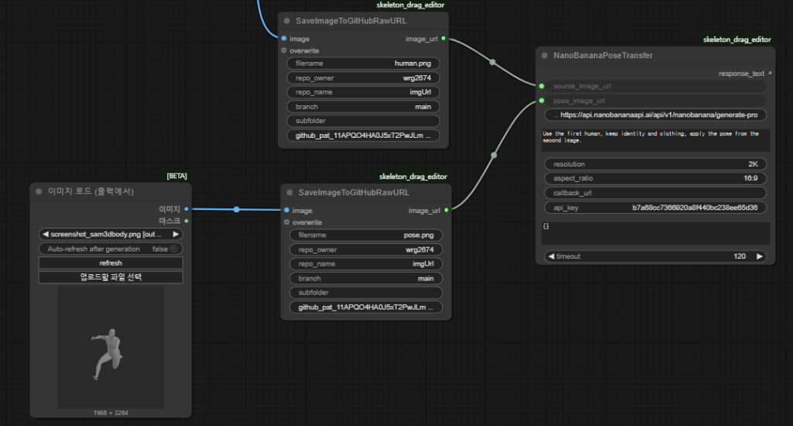

Approach
OpenPose-style skeleton extraction made the pose condition explicit and easy to pass to a generation model.
AI Image Editing Pipeline
Sejong University
An interactive pipeline for adjusting pose and composition in AI-generated character images while preserving the character's appearance, facial impression, and visual style.
Final Result Examples
The final system receives a source character image and a target pose image, then generates a new image that follows the pose while preserving the subject's visual identity and style.


First Attempt
The first direction was to extract a 2D skeleton from the image and use that skeleton as the pose control signal.
OpenPose-style skeleton extraction made the pose condition explicit and easy to pass to a generation model.
Manipulating a 3D body pose on a 2D plane was not intuitive. The model also failed to follow the intended pose reliably when the skeleton alone was used as guidance.
Second Attempt
The next direction tested recent models and combined multiple conditioning components to improve pose control and identity consistency.
CFLD and ChronoEdit were reviewed, and combinations of Stable Diffusion, ControlNet, IP-Adapter, and Arc2Face were tested and modified.
The generated pose improved in some cases, but clothing texture, facial details, and hairstyle often drifted. This was not stable enough for character-preserving refinement.
Final Attempt
The final version moved pose editing into ComfyUI, used SAM3Dbody to recover a rigged 3D body from a single image, and connected the edited pose to the generation API.

A 3D pose editor made the intended body motion easier to control than a flat skeleton. The custom node supported joint selection, mouse-drag rotation, camera reset, and screenshot capture inside the ComfyUI workflow.
NanoBanana showed stronger consistency than the previous combinations, especially in facial impression, clothing, hairstyle, and overall character appearance.
Final Output and Pipeline
The pipeline was designed as a controllable editing loop rather than a repeated prompt trial-and-error process.

